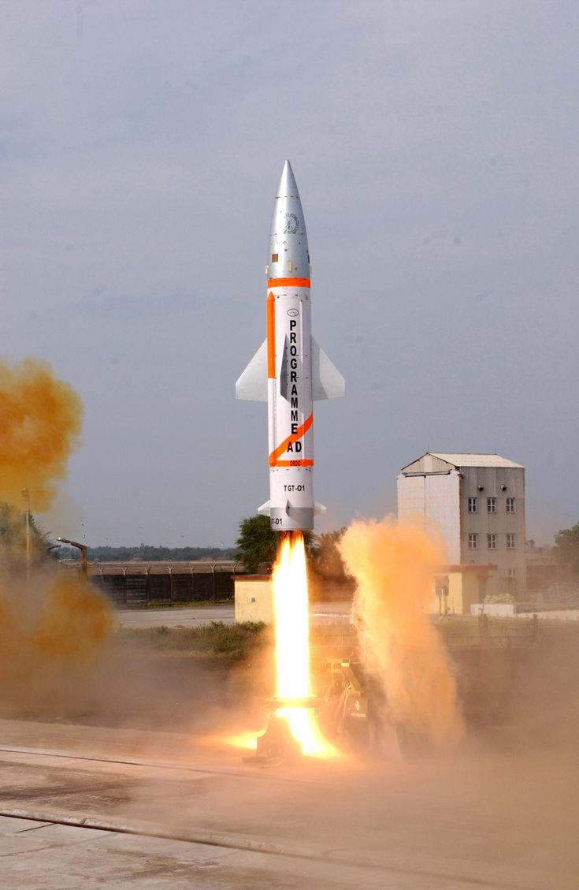
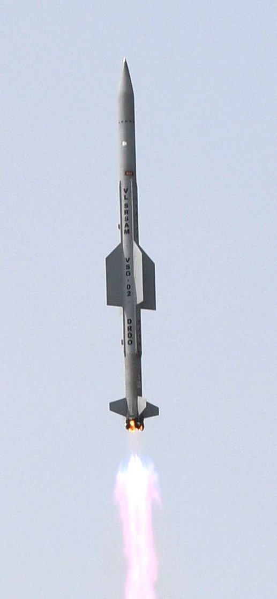
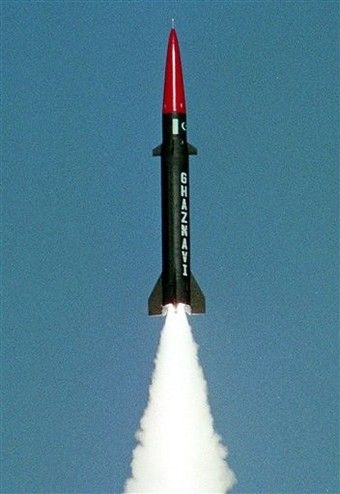

A.P.J. Abdul Kalam's work in missile development focused on building India's indigenous technological capabilities, leading to key projects like the Agni and Prithvi ballistic missiles and the BrahMos supersonic cruise missile.
The Project Director of the SLV-III project was Dr. A.P.J. Abdul Kalam. He was instrumental in the development of India's first indigenous Satellite Launch Vehicle, which successfully placed the Rohini satellite into near-Earth orbit in July 1980, making India a member of the "Space Club".
The K-series missiles are named in honor of Dr. A.P.J. Abdul Kalam for his significant contributions to India's missile development programs, including the Integrated Guided Missile Development Program (IGMDP).
